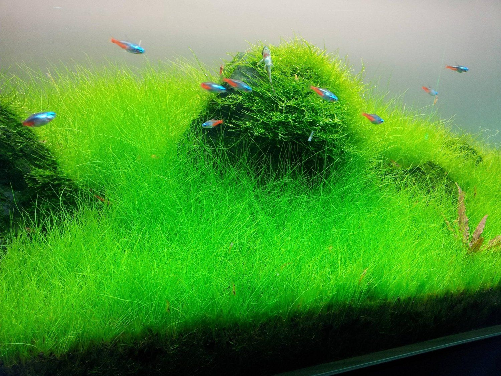
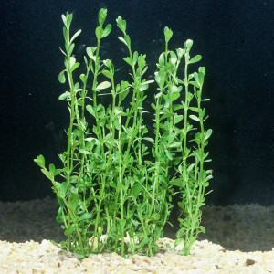

Plants Make A Happy Betta Fish
Betta fish do best in a planted tank. A planted tank requires a substrate (dirt) in which the plants roots will grow. Plants in a fish tank are generally categorized into three categories: carpts (also known as forground), midground, and background.
Carpets

Carpet plants are short and typically placed at the front of the tank.
Midground

Midground plants are taller than the carpet but shorter than the background plants.
Background

The background plants are the tallest in the tank - often being nearly as tall as the tank itself. They are typically placed at the back.
Home